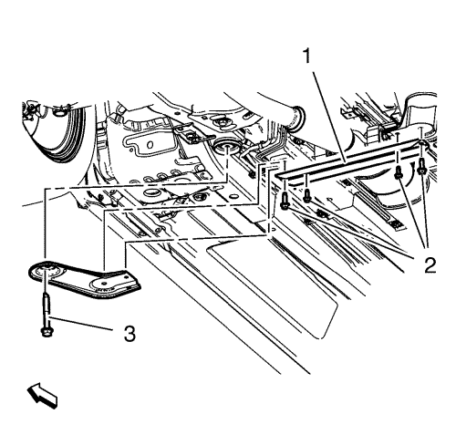
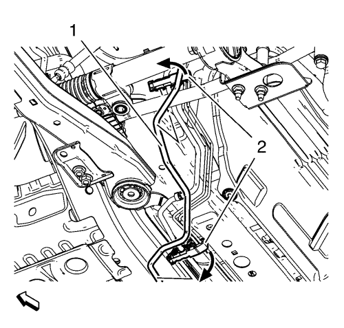

Sustitución de la tubería de retorno de combustible
Herramientas especiales
EN-6015 Tapones de cierre
Si desea informarse sobre herramientas regionales equivalentes, consultar Herramientas especiales .
Procedimiento de desmontaje
- Desconecte el cable negativo de la batería. Consulte Desconexión y conexión del cable negativo de la batería → sin sistema de arranque/parada.
- Desmontar la pantalla de protección del motor. Consultar Sustitución del protector del motor .
Advertencia: Consulte Advertencia sobre la gasolina y sus vapores en la sección Prólogo.
- Desacople el tubo de retorno de combustible (1) de la bomba de inyección de combustible (2) y suéltelo de los 2 clips de retención. Consultar Servicio del adaptador de conexión rápida del collarín plástico .
- Tape las conexiones con tapones EN-6015.
- Abra el soporte de la mampara superior (2).
- Suelte el tubo de retorno de combustible (1) del soporte de la mampara.
- Elevar el vehículo y soportarlo de manera segura. Consultar Elevación y soporte en alto del vehículo .
- Desmonte el aislante del compartimento delantero. Consultar Sustitución del aislamiento del compartimento delantero .

- Retire los 4 tornillos del soporte de suspensión delantero del tubo de escape (2).
- Retire el tornillo del bastidor de la suspensión del tren anterior y del tren de rodaje (3).
- Retire el soporte del bastidor de la suspensión del tren anterior y del tren de rodaje derecho.

- Desenganche el tubo de retorno de combustible (1) de los 4 clips de soporte (2).

- Desconecte el tubo de retorno de combustible (3) del conector del tubo de retorno de combustible (1). Consultar Servicio del adaptador de conexión rápida del collarín plástico .
- Tape las conexiones con tapones EN-6015.
- Suelte el tubo de retorno de combustible (3) del último clip de soporte (2).
- Extraiga la tubería de retorno de combustible (3).
Procedimiento de montaje
- Monte y posicione el tubo de retorno de combustible (3) y fíjelo al último clip del soporte (2).
- Quite los tapones EN-6015.
- Meta el tubo de retorno de combustible (3) en el conector del tubo de retorno de combustible (1).
- Sujete el tubo de retorno de combustible (1) en los 4 clips del soporte (2).
- Monte el soporte del bastidor de la suspensión del tren anterior y del tren de rodaje derecho.
- Monte el tornillo del bastidor de la suspensión del tren anterior y del tren de rodaje (3).
- Monte los 4 tornillos del soporte de suspensión delantero del tubo de escape (2). Consultar Sustitución del apoyo del soporte de suspensión delantero del tubo de escape .
Precaución:Consulte Precaución con las fijaciones en la sección Prólogo.
- Apriete el tornillo del bastidor de la suspensión del tren anterior y del tren de rodaje (3) a 160 N·m (118 lib. pie).
- Monte el aislante del compartimento delantero. Consultar Sustitución del aislamiento del compartimento delantero .
- Bajar el vehículo.
- Fije con clips el tubo de retorno de combustible (1) al soporte de la mampara superior (2).
- Cierre el soporte de la mampara superior.
- Quite los tapones EN-6015.
- Acople el tubo de retorno de combustible (1) a la bomba de inyección de combustible (2) y fíjelo a los 2 clips de retención.
- Monte el protector del motor. Consultar Sustitución del protector del motor .
- Conecte el cable negativo de la batería. Consulte Desconexión y conexión del cable negativo de la batería → sin sistema de arranque/parada.
| © Copyright Chevrolet. All rights reserved |